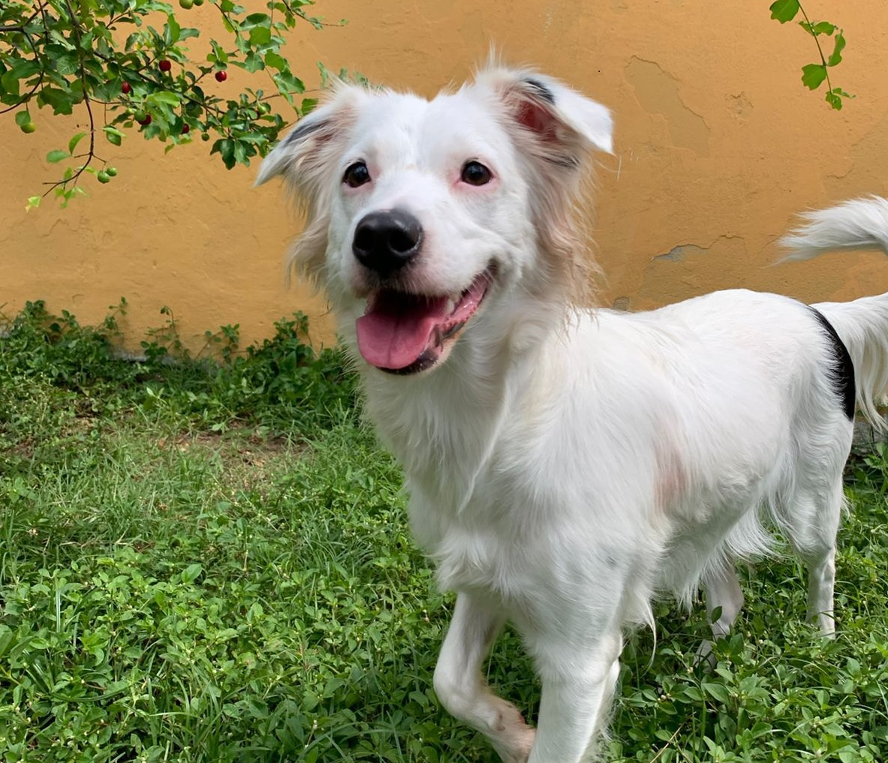

Alguns dos nossos animais disponíveis para adoção

Rex
Cachorro vira-lata
Macho - 2 anos

Luna
Gatinha branca
Fêmea - 1 ano

Thor
Cachorro
3 anos
O PetFriends é uma plataforma que conecta pessoas dispostas a adotar animais de abrigos e ONGs, proporcionando um lar para aqueles que mais precisam de amor e carinho. Faça parte dessa transformação!
Cachorro vira-lata
Macho - 2 anos
Gatinha branca
Fêmea - 1 ano
Cachorro
3 anos
Preencha o formulário abaixo e comece o processo de adoção de um animal que precisa de um lar.
Cadastrar